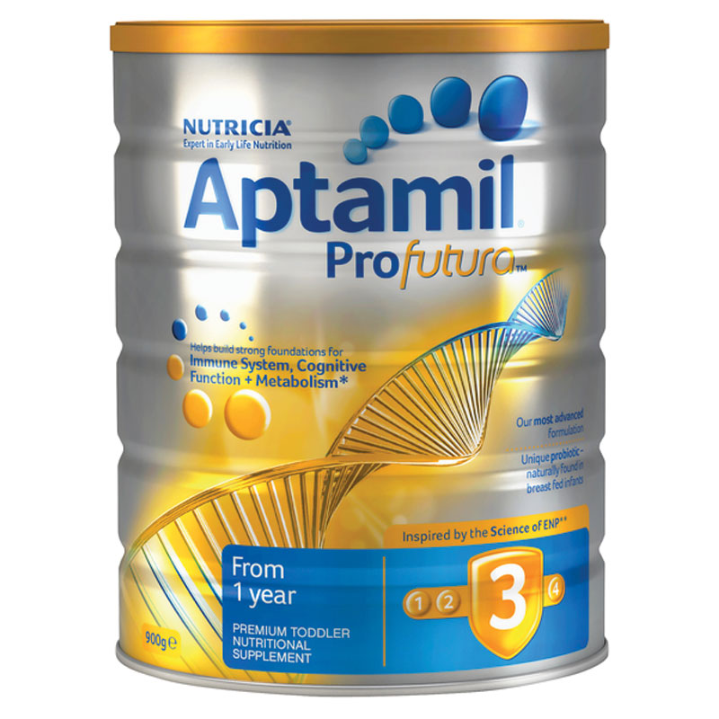
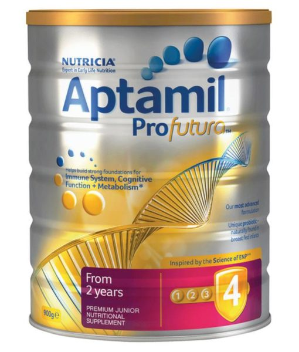

|  | Aptamil 澳洲爱他美白金版婴儿奶粉三段，四段采用高端婴幼儿配方,3段特别为1岁以上的宝宝研制，4段特别为2岁以上的宝宝研制。经科学鉴定，有助于宝宝建立强有力的免疫基础,蕴含大量天然母乳喂养婴儿益生菌成分(双歧杆菌谕令M-16V)，同时结合其他先进成分提供独特的协同效应。 ○ 提高免疫力：益生菌提供营养成分，支持免疫系统 ○ 大脑发育：鱼油有助于帮助大脑发育 ○ 新陈代谢：帮助支持正常的新陈代谢
主要成份：
○ GOS：益生元膳食纤维，母乳中的重要纤维。 ○ ω-3脂肪酸：是人体最重要的营养素之一，但人的体内不能自身合成，必须从食物中获得。 ○ 乳糖：是母乳中唯一可用的碳水化合物，为宝宝提供能量，增进食欲。 ○ 铁：血液的重要组成部分，有助于氧的运输。维他命E：帮助构建各种细胞。 使用方法：
○ 将冲泡所需的水煮沸并凉至50°C左右 ○ 根据宝宝不同年龄，按照简易将热水量的2/3倒入奶瓶中 ○ 取出包装内量勺，按照用量建议表量取合适的奶粉放入奶瓶中 ○ 盖好瓶盖大力摇动 ○ 将剩余1/3的温水倒入奶瓶 ○ 将奶滴在手背处试温，温度控制在37°C 注意事项：
○ 切记不可用滚烫的开水冲制奶粉，这会破坏奶粉所含的营养成分 ○ 冲制奶粉时避免上下摇晃奶瓶，应横向转圈摇，从而避免奶液起泡 ○ 冲制好的奶液要及时食用，剩余的奶液不可再给宝宝喂食 ○ Nutricia Aptamil的很多有益成分是在宝宝体内合成的，因此开封后可以储存较长时间，但仍然建议尽量在一个月内用完，每次取出奶粉后都应立即封口，常温下保存，避免潮湿、高温和阳光直射 |